Flip Flop Bot is a prime example of a state machine, as it follows a specific routine and has different modes of operation. For instance, if the first set of switches is activated, the bot is in its first mode and travels in a forward direction. If the other set of switches is activated, the bot is in its second mode and travels in a backward direction. Essentially, this bot drives forward until it hits something, and then it reverses and goes the other way until it hits something else. If you put the bot in a door frame, it travels back and forth endlessly (or until the batteries run out).
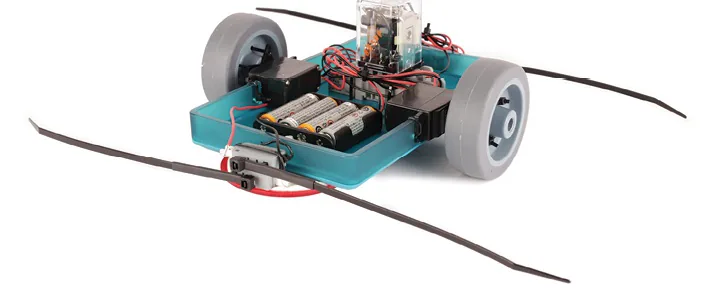
If you want to create something a little more dynamic, swap out the round wheels for wheels of a different shape (oval perhaps). Then Flip Flop Bot will no longer travel back and forth in a straight line continuously.
The beauty of this bot is that it can change its state and then stay in that new state until it receives new input.
Tools and Supplies
- Two continuous-rotation servo motors with the controllers removed
- A 4 × AA battery holder
- Four AA batteries
- Two 3-inch casters
- Two 3-inch round reflectors
- A 6 V 3PDT relay
- A 3PDT relay socket
- An 8 × 5 × 1-inch tray (or similar)
- Four snap-action lever switches
- Two 1/4-20 leveling mounts
- A 3/8-inch diameter shrink tube
- Four 8-inch zip ties
- Assorted zip ties
- Saw
- Drill
- A 1/8-inch drill bit
- A ¼-inch drill bit
- Wire stripper
- Diagonal cutting pliers
- Screwdriver
- Ruler
- Marker
Flip Flop Overview
To make this bot, first modify two continuous-rotation servos for direct drive by removing their controller boards (Chapter 4) or use two geared motor alternatives, as outlined in Appendix A. You’ll drill the servo horns and attach them to the caster wheels. From there, you’ll mark and modify the tray to attach it to the servo motors. You’ll wire up each pair of switches, attaching them to the reflectors and attaching the reflectors to the tray. Then, you’ll wire up the whole circuit using a 3PDT relay. This is similar to a DPDT relay (or switch) but has an additional set of SPDT pins built in. You can learn more about this relay in Appendix A on page 161. Once that is wired, you’ll secure the relay and reattach the wheels. To complete the bot, you’ll add zip-tie antennae to the switches, and you’ll be ready to power up the bot.
Constructing Flip Flop
Step 1. Remove the center bolts to separate the wheels from the caster frames.
Step 2. Widen the second-from-the-last hole in each end of the servo horn using a 1/8-inch drill bit. Repeat for the other servo horn.
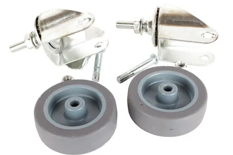
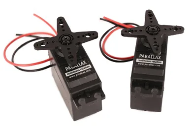
Step 3. Undo the mounting screws to remove the servo horns from the servos.
Step 4. Center a servo horn on each wheel and use a thin screwdriver to press marks into the frame of each wheel to use as drill guides.
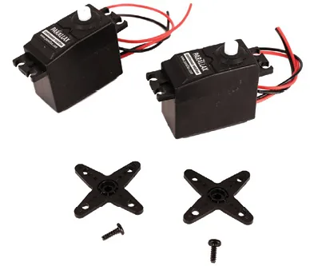
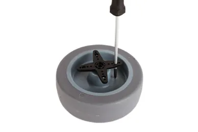
Step 5. Use the indents you just made as guides to drill 1/8-inch holes straight down through the wheels.
Step 6. Zip-tie the servo horns to the wheels and trim away the remaining tails.
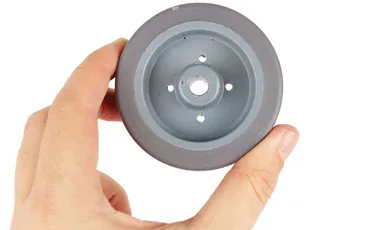
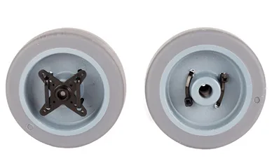
Step 7. Make a mark centered on each of the long edges of the tray.
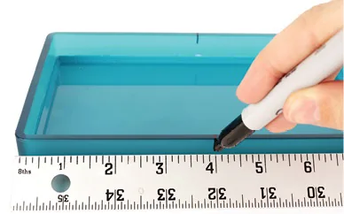
Step 8. Line up the servo shaft with the center marks and then trace two cut marks onto each long edge of the tray to outline the body of the servo.
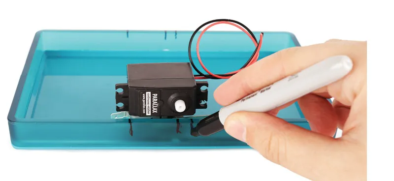
Step 9. With the lines you drew in step 8 as a guide, use a saw to cut out a hole large enough to insert the motor into it on each long side of the tray. The motors should be resting along the bottom of the tray.
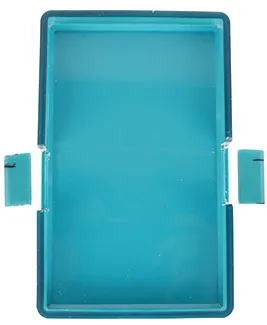
Step 10. Make marks to indicate the servo mounting holes along the edge of the tray. If only the bottommost holes line up with the edge of the tray, it’s okay.
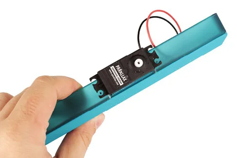
Step 11. Drill through the marks on the sides of the tray using a 1/8-inch drill bit.
Step 12. Zip-tie the motors to the edges of the tray.
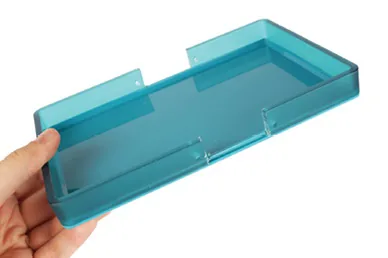
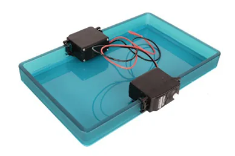
Step 13. Stack two switches along the edge of each round reflector. Make marks on each reflector on both sides of the switch to serve as drill guides for a zip tie.
Step 14. Make another mark roughly in the center of each reflector.
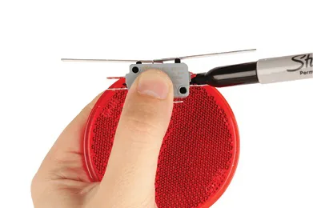
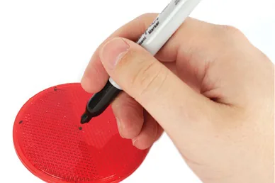
Step 15. Drill all the marks on the reflectors with a 1/8-inch drill bit.
Step 16. Peel the adhesive back from each reflector and stick a switch along the edge between the 1/8-inch holes.
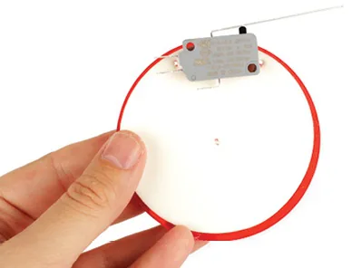
Step 17. Stack another switch on top of the one on the adhesive reflector and zip-tie it in place. Repeat this process with the remaining reflector and lever switches.
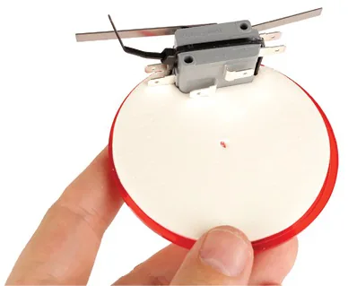
Step 18. One pair of switches should have their normally closed (NC) connections wired in series. This means you need to wire the common pins together, attach a long red wire to the NC pin on one switch, and attach a long black wire to the NC pin on the other switch.
The other pair of switches should have their NO (normally open) connections wired in parallel. This means you need to wire the common pins together and then wire the NO pins together. Finally, attach a long red wire to the NO connections and a long black wire to the common connections.
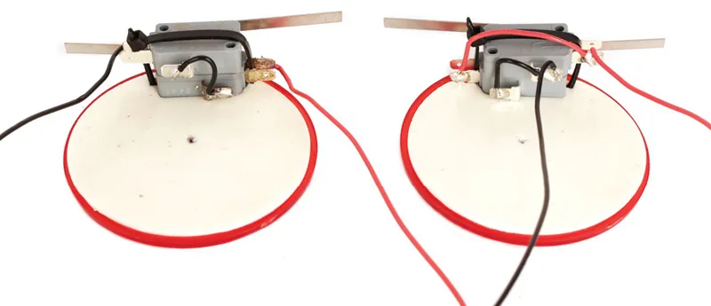
Step 19. Stick one of the reflectors to the bottom of the tray such that the switch is right up against one of the short edges of the tray.
Step 20. Attach the remaining adhesive reflector to the bottom of the tray along the other short edge.
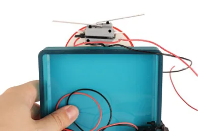
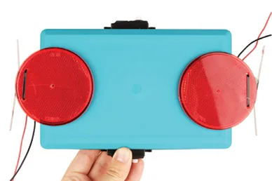
Step 21. Drill through both the center of the reflector and the tray using a ¼-inch drill bit.
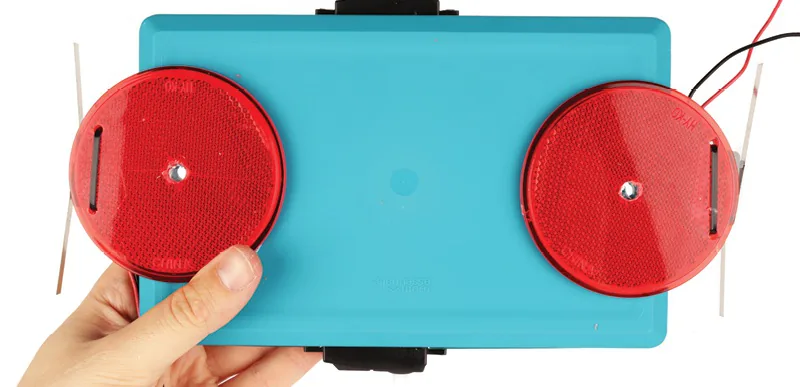
Step 22. Attach the leveling mounts directly below the reflectors and lock them in place with their mounting nuts.
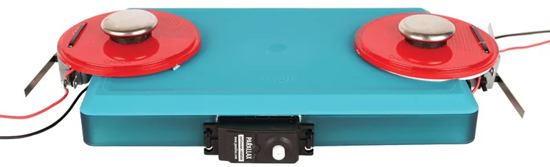
Step 23. Place the relay socket on top of the tray and make two marks along both edges to indicate where its mounting holes will be.
Step 24. Drill each of the four markings with a 1/8-inch drill bit.
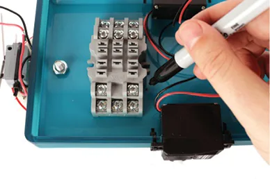
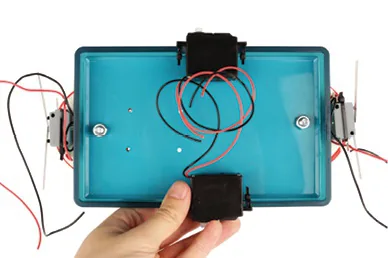
Step 25. Build the circuit using the relay socket as outlined in the following wiring diagram. Go slow and make sure that all the correct connections to the relay socket terminals are made. You can learn more about how this circuit works in Appendix A on page 161. When you are done building the circuit, the motors, switches, and battery holder should all be wired to the relay socket, as shown.
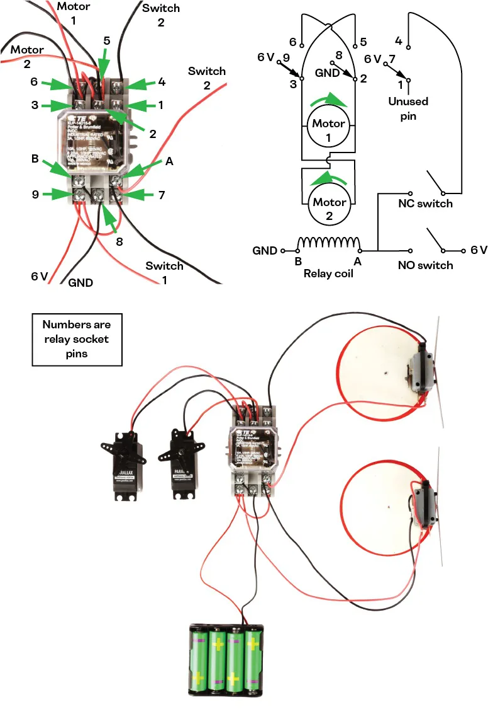
Step 26. Insert the 3PDT relay into the relay socket.
Step 27. Attach the wheels to the servo hubs using the servo horns’ mounting screws.
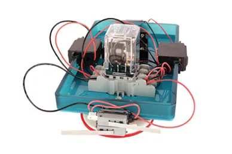
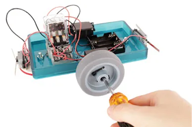
Step 28. Zip-tie the relay socket firmly to the bottom of the tray. While you are at it, you can optionally clean up the wires using zip ties as well.
Step 29. Slide the shrink tube all the way onto the 8-inch zip ties. Then slide the shrink tube and zip-tie assemblies onto each lever of the snap-action switches to create antennae. Once these are positioned, use a heat gun to shrink the tubing.
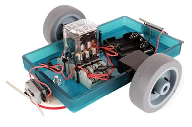
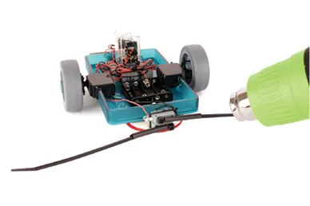
Step 30. Insert the batteries into the battery holder and let the bot go.
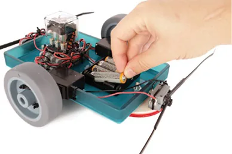
When the bot collides with an object, the switches should compress, and the bot should reverse. If it doesn’t behave as expected, check your wiring against the diagram. See Appendix A for a more detailed description of this circuit.